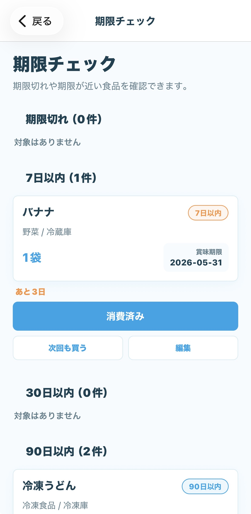
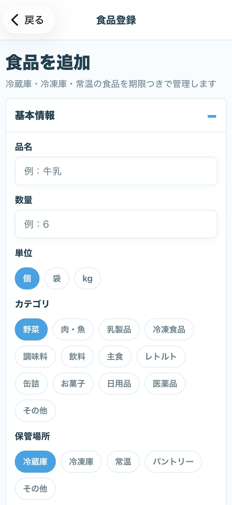
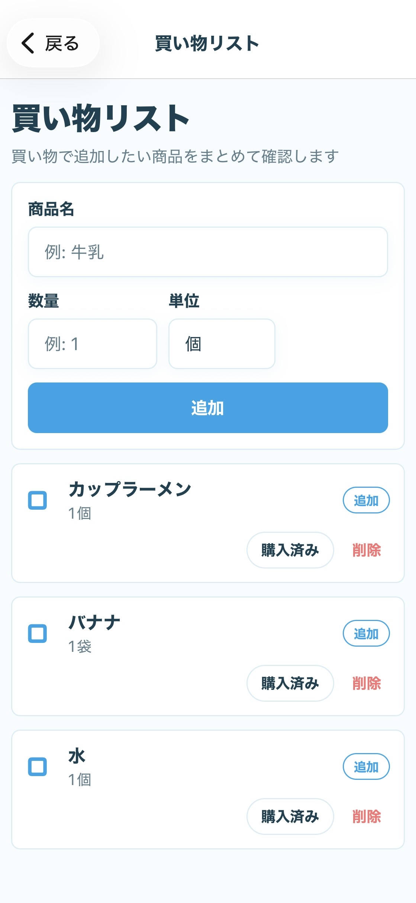
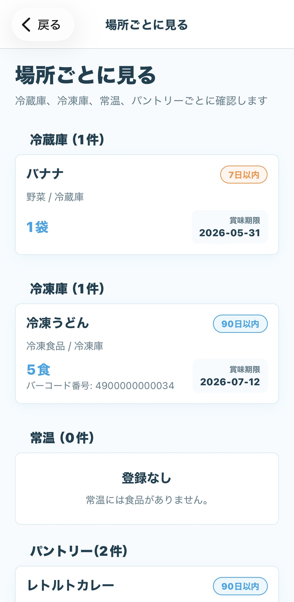

食品登録
品名、数量、カテゴリ、保管場所、期限をまとめて登録。写真やメモも残せます。
今の仕様
冷蔵庫、冷凍庫、常温、パントリーごとに食品を整理。期限が近いもの、よく買うもの、購入・消費の履歴まで、日々の確認を少し軽くします。
主な機能
品名、数量、カテゴリ、保管場所、期限をまとめて登録。写真やメモも残せます。
期限切れ、7日以内、30日以内、90日以内に分けて確認できます。
買うものを追加して、購入済みまで管理。買い忘れを減らします。
定番品を登録しておけば、いつもの買い物をすばやく追加できます。
冷蔵庫、冷凍庫、常温、パントリーなど、場所別に見渡せます。
通常読み取りと連続読み取りに対応。まとめ買い後の登録もスムーズに。
画面イメージ
ホームには、食品ストックの状態、期限が近い食品、買い物リスト、保管場所への入口をまとめています。




データ保存
登録した食品、写真、買い物リスト、履歴、設定は端末内に保存されます。現在の仕様では、アカウント登録、クラウド同期、開発者独自の分析SDKはありません。無料プランの一部機能では広告を表示する場合があります。
プライバシーポリシーを見る